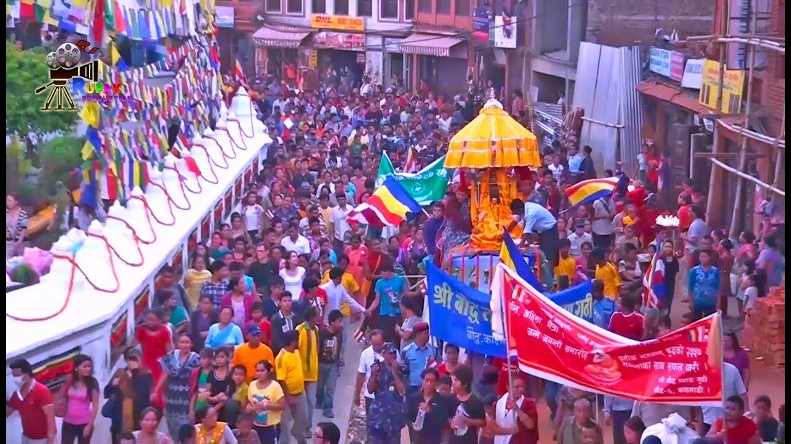

Buddha Jayanti is the birth anniversary of Gautam Buddha- light of Asia. Buddha was born in 563 BC in Kapilvastu, Lumbini. Therefore, it is an auspicious day, not just for the Buddhists but also for the others in the country. People visit Swayambhunath, Boudhanath, Lumbini and other stupas and monasteries during the day. The beautifully lit butter lamps make these holy sites look more magical in the evening. One may observe parade or large gatherings where monks, nuns, and followers read prayers and tell moral or life story of Lord Buddha. People do Dana Dharma to show generosity by helping others. Nepal is rich in cultural and traditional practices. The country observes many other festivals like Eid, Christmas, Gathe Mangal, Sivaratri, Krishnasthami etc. Kathmandu valley itself observes numerous Jatras (festivals) like Ghode Jatra, Bhoto Jatra, and others. While some of these come from the epics and legends of Hinduism and Buddhism, others are the result of age-old traditions, cultures of bygone kings and historical events.